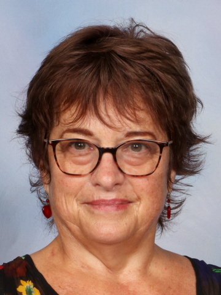
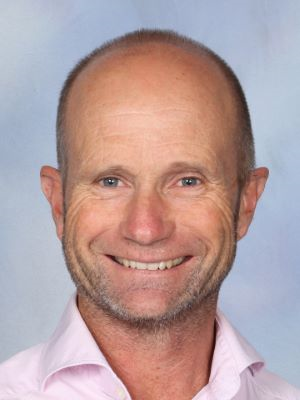
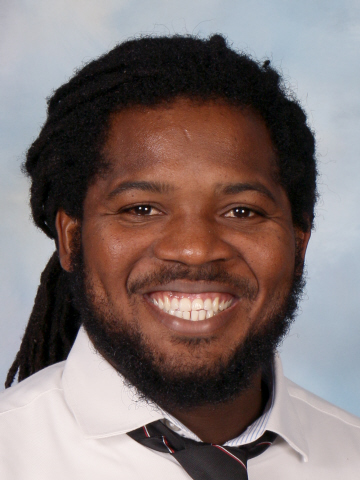
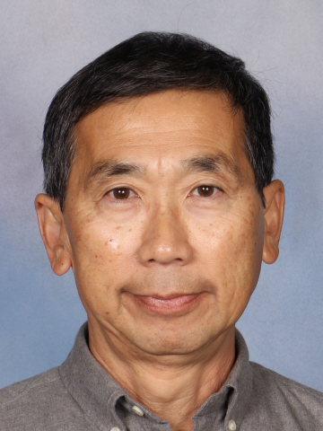

Mr Cooper
PRINCIPALLeading Rosmini College with a commitment to academic excellence and the Rosminian charism. Mr Cooper oversees the strategic direction and pastoral wellbeing of our community.

Mrs Morrough
Responsible for curriculum development and staff professional growth. Mr Wilson works closely with department heads to ensure the highest standard of learning outcomes.
Mr Maggs
Responsible for curriculum development and staff professional growth. Mr Wilson works closely with department heads to ensure the highest standard of learning outcomes.

Mr Latch
Responsible for curriculum development and staff professional growth. Mr Wilson works closely with department heads to ensure the highest standard of learning outcomes.

Mr Lennard John
I'm Lennard John, originally from a small island in the Caribbean called Grenada, known for having some of the greatest spices in the world. Before moving to New Zealand in 2020 I spent 10 years of my life in China, mainly Beijing, where I've become fluent in Mandarin. Rosmini was one of my placement schools during my teacher training. I'm happy to be back!

Mr Foong
Ko David Amrein, toku ingoa. I was born in Tāmaki Makaurau, and started my teaching career here in Auckland before teaching overseas for two years. I then spent the next 20 years teaching and living in Pōneke, Wellington. I have finally returned back to Auckland and I am excited to begin my next chapter at Rosmini College. I am the Head of Department for Mathematics.